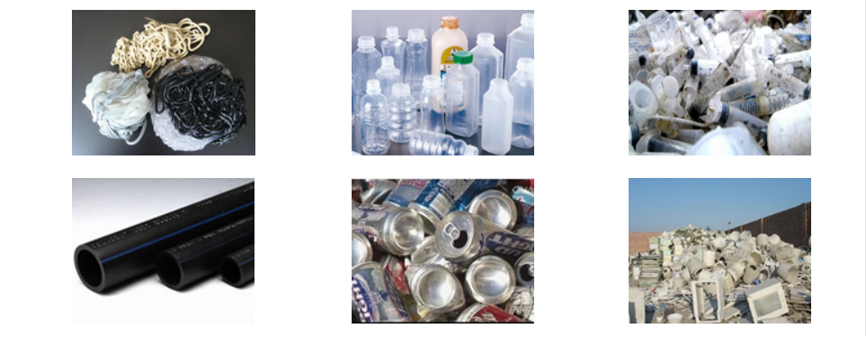

Plastic Single Shaft Shredder
Shred bulky plastic scrap, including thick pipe sections and moulding lumps.
Inquire about this product Prepare a detailed project brief
Equipment overview
This Single Shaft Shredder is designed and applicable to intractable, hard and irregular enginerring plastics such as thick pipes, lumps from extruder, package barrels, buckets, trays,ruber, wood, etc. Working with medium speed and tenderly, low noise, low power consumption. Rotary knife designed symmetrically, can be exchanged four times for use, which prolong use long life span. When push materials by hydraulic, can select speed and presure freely according to different materials load. It is with low labor strength, safe& reliable operation.
Rotor blades on the knife holder and removable for easy cleaning, maintenance, maintenance; Knife with small "V" Shaped installation, so turn the knife in the whole work cut material evenly, reduce energy consumption, reduce noise; Each rotary blade has 4 cutting edges, the wear and tear can be rotated 90 ° to continue to use; Each fixed blade has 2 cutting edges for working at the same time, the wear and tear can be rotated 180 ° to use;
Main shaft is driven by a gear box, smooth operation, low noise, large torque; Hydraulic pusher, an independent power systems, solid structure, smooth operation;
Technical specifications
Reference configurations from the product catalogue. Confirm output, dimensions and equipment selection for your material and project.
| Model | Rotor swing diameter | Drive motor | Rotor speed | Rotor blade Qty | Fixed blade Qty. |
|---|---|---|---|---|---|
| HDSS700 | φ300 | 30kw | 83rpm | 30 | 2 |
| HDSS 900 | φ360 | 37kw | 83rpm | 34 | 2 |
| HDSS1100 | φ400 | 45kw | 83rpm | 42 | 2 |
| HDSS1300 | φ450 | 55kw | 83rpm | 54 | 2 |
| HDSS1500 | φ450 | 75/90kw | 83rpm | 72 | 2 |
Detailed Images
Application
We are specialized manufacturers from China, Reconditioned Plastic Machines, plastic crusher and shredder Mixers suppliers/factory, wholesale high-quality products of crusher and shredder R & D and manufacturing, we have the perfect after-sales service and technical support. Look forward to your cooperation!

Equipment video
Ask about this machine
Plastic Single Shaft Shredder